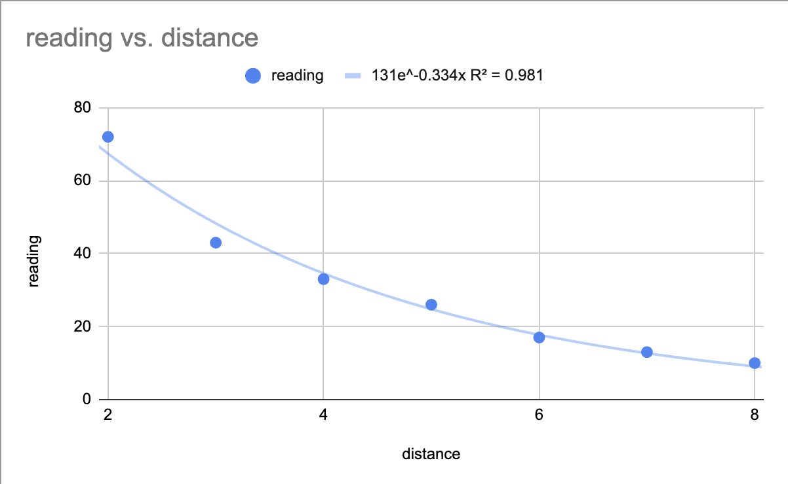

### Inputs
## Concept & Inspirations
For my microcontroller week, I used a distance sensor to control a kinetic sculpture representation of Daphne from the myth of Daphne and Apollo. As the distance sensor is a fairly useful sensor, I decided to calibrate it for this week's assignment.
## Design Process
As with the microcontroller project, I wired my distance sensor to the ESP32 as shown:
I used the following code to record the readings from the distance sensor at different distances as measured by the ruler:
<pre><code>
digitalWrite(trigPin, LOW);
delayMicroseconds(5);
digitalWrite(trigPin, HIGH);
delayMicroseconds(10);
pinMode(echoPin, INPUT);
duration = pulseIn(echoPin, HIGH);
Serial.println(duration);
</code></pre>
Using these, I entered my data into a spreadsheet and used it to calibrate the sensor. The distance in inches should be the duration reading divided by the slope of the line, shown on the graph.
*this says centimeters, but it should be inches. I use centimeters for the capacitive sensor portion.
I decided to try a different type of distance sensor for the second part of this assignment: a capacitive distance sensor. I connected the aluminum of my capacitor through a 10k ohm resistor to an input pin on the ESP32. I used the same setup as before to graph my readings against actual distance, though this time they were averaged over 200 readings for a bit more precision.
<pre><code>
const int numMeasurements = 100;
for (int i = 0; i < numMeasurements; i++) { // get the average of 100 readings to smooth out the data
sensorValue += Sensor.capacitiveSensor(1000);
delay(10);
}
</code></pre>
The graph in this case looked a little different:
